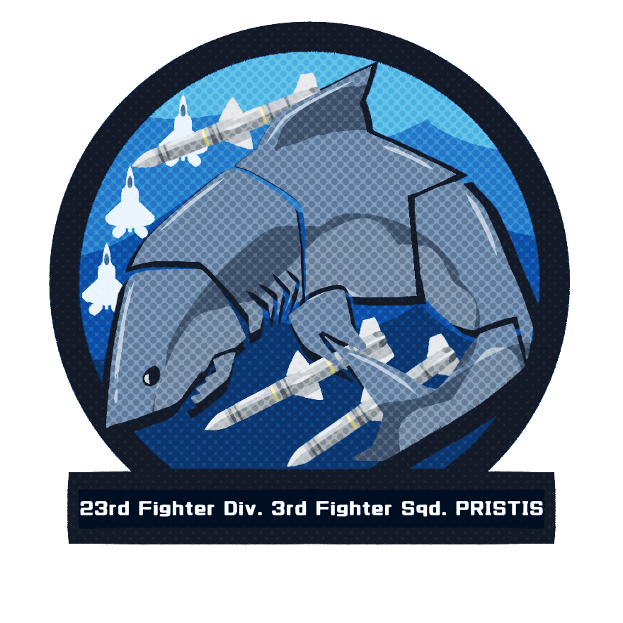

HOME
ABOUT
PORTFOLIO
CONTACT
This is the Portfolio Website of Alfred Perez, if you wanna see more from me click the icons above to travel around and be comfortable, god bless.
A tribute to Hololive EN
A piece i've drawn to celebrate coming back to the fandom after nearly 3 years.